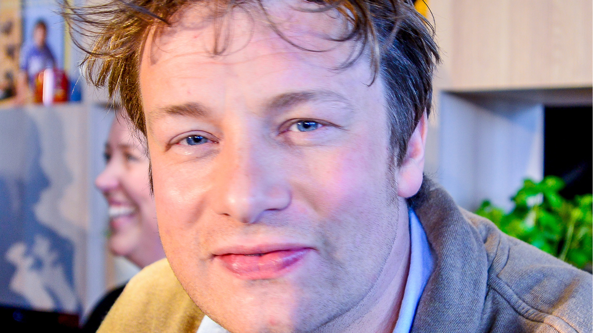

REFLECTING JAMIE
Jamie Oliver the man is fundamental to our brand. Our identity is therefore a true refl ection of Jamie, creating an iconic brand that captures the essence of who he is and what he stands for now and in the future. The things that are important to Jamie are in turn important to u:s
